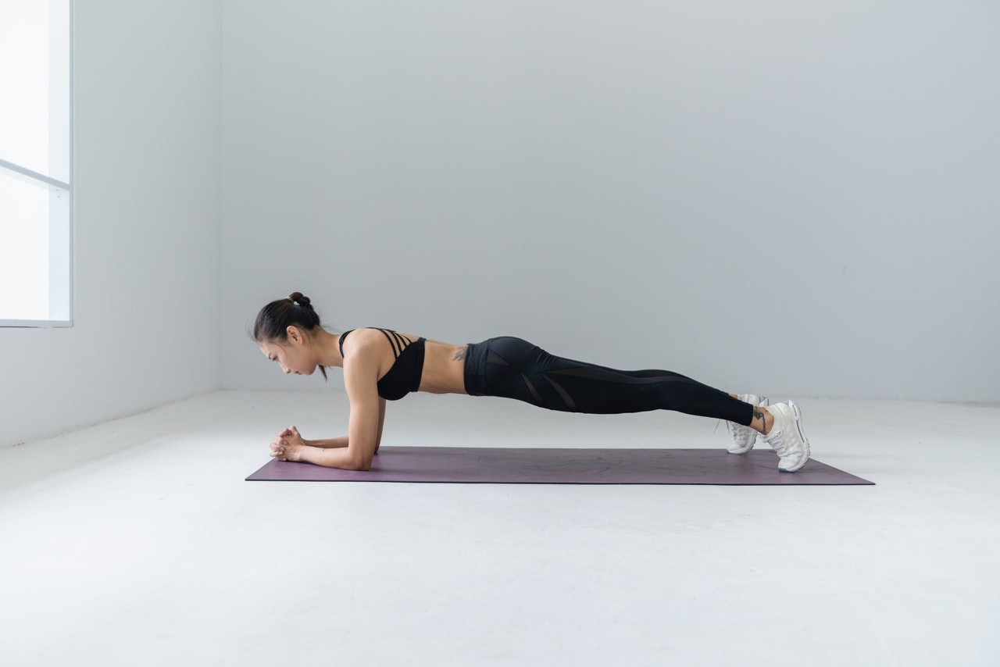
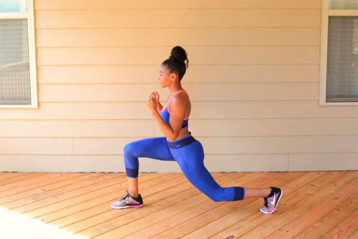
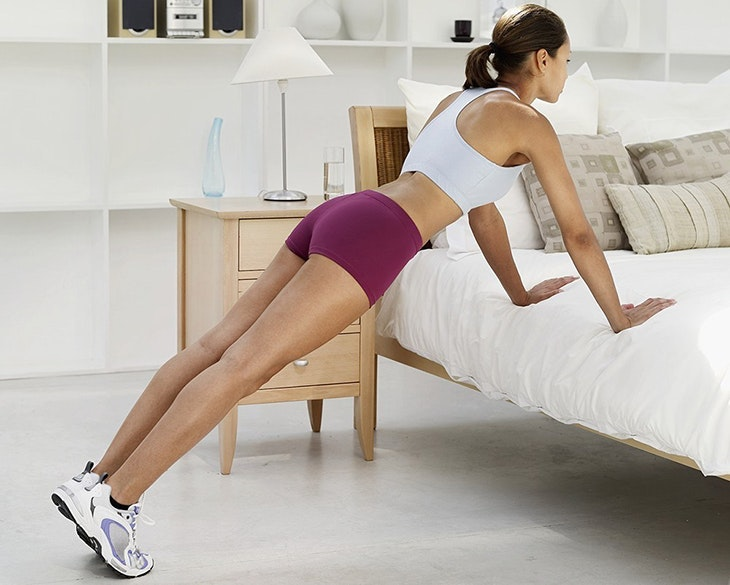
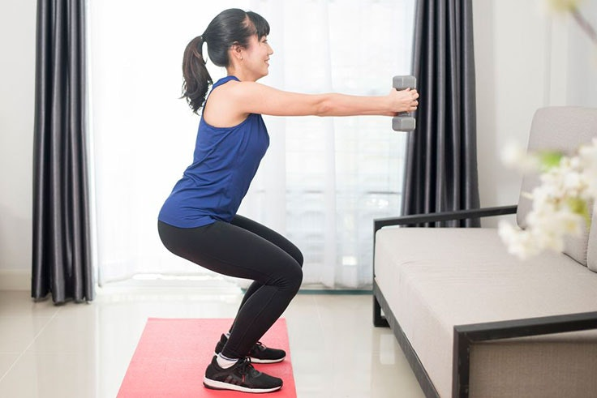
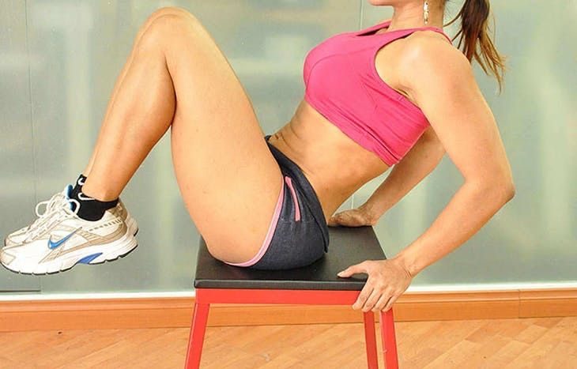

Haz ejercicio en casa y mantente en forma.
Ahora sí que vamos a enseñarte los mejores ejercicios para hacer en casa para
aquellos a los que no os dé tiempo ir al gimnasio. Esta serie de ejercicios son
un clásico del deporte y no te llevarán más de 20 minutos. Según vayas notando que
tu cuerpo se acostumbra al ejercicio podrás ir invirtiendo más tiempo y realizar otro
tipo de ejercicios.
La plancha.
La plancha es un ejercicio en auge en los últimos años y es que sus resultados son asombrosos.
Además tiene muchas variantes: plancha lateral, plancha con flexión, plancha a una mano y plancha
con una pierna levantada. Para hacer una plancha normal, empieza en el suelo, aprieta el estómago
y procede a soportar tu peso sobre los codos y las puntas de los dedos de los pies durante 15-20
segundos. La espalda debe estar completamente recta.

Zancadas.
Para ejecutar correctamente la realización de este ejercicio debemos colocarnos con los pies
juntos y darun paso hacia adelante, doblando las dos piernas hasta que la rodilla de atrás
casi toque el suelo y ambas rodillas estén dobladas a 90 grados. Haz fuerza con los pies y
cambia de pierna con cada repetición. Es un ejercicio unilateral muy útil para conseguir
desarrollar la fuerza de las piernas por separado y ganar tono por igual en ambas extremidades.

Flexiones.
En el caso de que no estés acostumbrado a realizar este tipo de ejercicio, empieza poco a poco y
ve aumentando progresivamente las repeticiones en tus flexiones. Comienza apoyando las rodillas en el
suelo y cuando ganes más fuerza en los brazos ya realizarlas con el cuerpo completamente elevando del suelo,
con los pies y las manos como único apoyo.

Sentadillas
Para realizar las sentadillas es importante que aprendas a colocar tu cuerpo en la posición adecuada.
Colócate contra la pared para mantener tu espalda completamente recta, comienza a flexionar las rodillas.
Verás cómo en poco tiempo y de forma progresiva conseguirás quemar grasa. No fuerces demasiado, ya verás
cómo las siguientes veces lograrás alcanzar mayores objetivos.

Abdominales.
Coloca tu cuerpo en posición horizontal en el suelo, si te duele al realizar estos ejercicios, puedes
colocar una alfombra o comprar una colchoneta de gimnasio para sentirte más cómodo. Es muy importante
que tus pies no se mueva y que mantengas la espalda recta mientras levantas el tronco. No fuerces el
cuello al incorporarte. Poco a poco podrás ir incorporando diferentes tipos de abdominales a tu rutina
de ejercicio desde casa.
